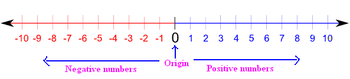

Addition - whole numbers whose quantities combine into one total
The commutative property of addition
When doing addition order does not matter, the final solution will be the same.
a + b = b + a
Example:
5 + 3 = 8
3 + 5 = 8
5 + 3 = 3 + 5
The associative property of addition
Finding the sum in the parenthesis is done first, but similar to the commutative property order does not matter. The solution will be the same.
a + (b + c) = (a + b) + c
Example:
4 + (2 + 6) = 12
(4 + 2) + 6 = 12
4 + (2 + 6) = (4 + 2) + 6
Vertical addition
When adding numbers align the digits vertically with the largest on top. Align the numbers starting with the furthest right digit in the ones place. Starting from the right most position, find the sum of the single column.
If the sum of the column is 10 or more the extra digit has to be carried one column to the left.
Example:
Subtraction - removing objects from a collection
Subtracting from a smaller number
a < b, a - b = -c
Example:
5 - 9 = - 4
Subtracting a negative
When subtracting from a negative from a positive the double negative turns into a sum and normal addition is done.
a - (-b) = a + b
Example:
12 - (-5) = 12 + 5 = 17
Number Line
A useful trick to perform basic operations is to go up and down intervals of the number line by picking an initial value and going positively or negatively as the operation dictates.
